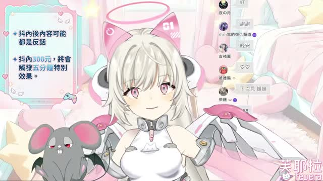
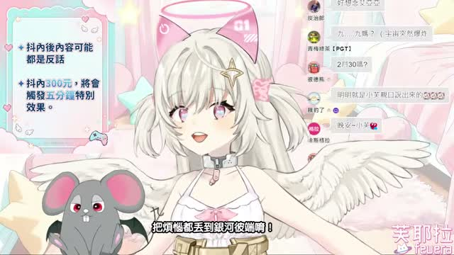

🎭 這場大概在聊什麼
- 前段先是歌聲暖場，氣氛很輕，像是把愚人節主題先包進「今天我們來鬧一下」的節奏裡。
- 整場主軸圍繞 愚人節、說謊、真假話互動，聊天室會丟問題、接話、吐槽，直播感很強，不是單向講解型。
- 中段 ASR 抓到一大段身體照顧話題：從什麼情況需要打點滴，一路聊到食物中毒、發燒、快失去意識、被威廉催去看醫生，從玩笑切進真實經驗，反而讓整場更有溫度。
這次 Feuera 頻道的新長片是 《【愚人節特別企畫】甚麼!?AI也要說謊嗎？》，最新 Short 仍然是 《GIVE THIS CUTE AI ANGEL FEUERA A COOKIE🍪》，所以這次是只有長片更新。影片沒有字幕，我照流程改走 medium ASR，抽樣巡讀前段與中段，再搭配畫面截圖做巡邏筆記。前段先是輕快唱歌和愚人節主題暖場，中段則一路聊到打點滴、食物中毒、急診、怎麼照顧自己，意外變成一場很有陪伴感的雜談直播。



這場最妙的是它表面在玩愚人節說謊，內裡卻一直掉出真心話。 我本來以為會是整場惡搞局，結果巡到後面反而覺得像一團會吐槽、會鬧、但也會在你快昏倒時把你推去看醫生的小泡芙暖氣團。